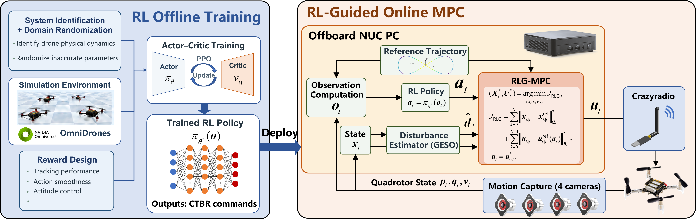
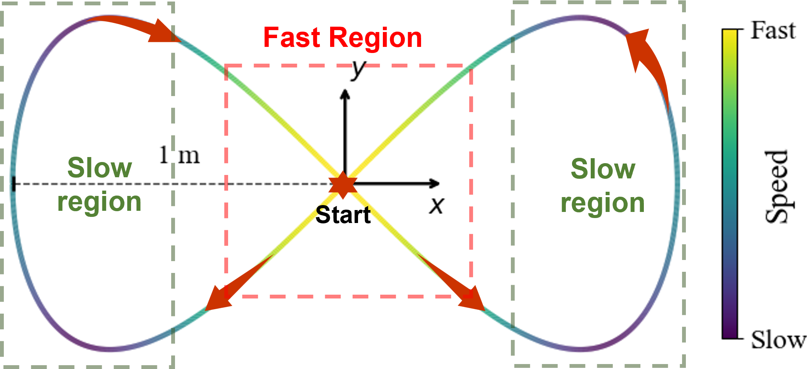
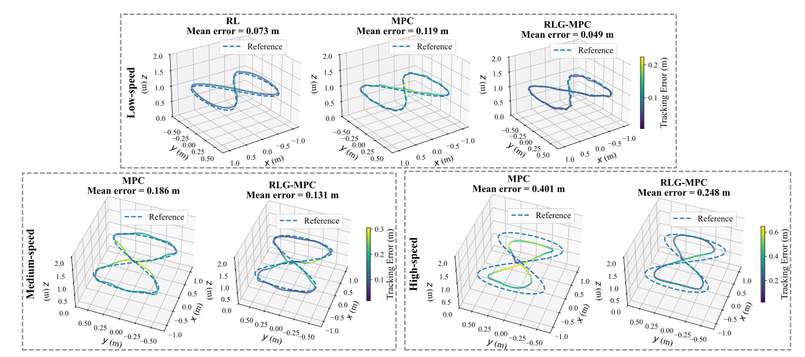
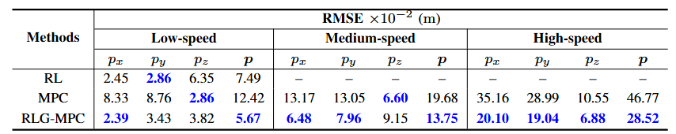

RLG-MPC: Offline Policy Guidance with Online Constrained Optimization for Quadrotor Control

Abstract
Reinforcement learning (RL) enables fast online inference after offline training, but its real-world deployment can be affected by the sim-to-real gap and limited constraint handling. Model predictive control (MPC) can explicitly handle constraints, but is limited by the computational cost of online optimization, which restricts the prediction horizon and achievable performance. To combine their complementary strengths, this paper proposes an RL-Guided MPC (RLG-MPC) framework, where an pretrained RL policy provides prior guidance through the MPC cost function, while the final control command is determined by online MPC optimization. In this way, the proposed framework retains the interpretability and constraint-handling capability of MPC, together with its convenient integration of disturbance estimation and compensation to adapt to complex and varying real-world environments, while leveraging RL to provide guidance beyond the finite prediction horizon of MPC. Real-world Crazyflie experiments under low-, medium-, and high-speed trajectory-tracking conditions show that RLG-MPC completes all tasks and reduces position RMSE relative to MPC by \(54.3\%\), \(30.1\%\), and \(39.0\%\), respectively. These results demonstrate that pretrained policy guidance can improve performance of MPC while preserving its model-based online optimization structure.
Framework Overview

Overview of RLG-MPC. The pretrained RL policy maps the current observation \(\mathbf{o}_t\) to a long-horizon action prior \(\mathbf{a}_t\), which is used as the reference for the first MPC control input, while the remaining input references retain their nominal values. Online MPC then optimizes the control sequence using its prediction model, disturbance estimate, cost function, and state/input constraints, with only \(\mathbf{u}_{0|t}^{*}\) applied to the quadrotor. Thus, RL provides learned guidance while MPC retains final control authority.
Real-world Validation
The experiments are conducted using a Crazyflie nano quadrotor. A NUC PC equipped with an Intel i5-12450H processor is used for offboard computation, and the final control commands are wirelessly sent to the Crazyflie via a Crazyradio. The quadrotor states are obtained from a four-camera ChingMu MC1300 motion capture system. In the experimental validation, the proposed RLG-MPC framework is compared with the standalone RL and MPC algorithms. All three methods are commanded to track a lemniscate trajectory at a height of 1 m under three different speed conditions: low, medium, and high. The corresponding average speeds are approximately 0.4 m/s, 0.6 m/s, and 1.2 m/s, while the maximum speeds are up to 0.6 m/s, 0.9 m/s, and 1.8 m/s, respectively.


Left:Real-world experimental setup; Right: Reference trajectory in the experiments.
Real-world Results

Trajectory-tracking results of RL, MPC, and RLG-MPC under three different speed conditions.

Position-tracking RMSE across three flight-speed conditions (lower is better). The \(\mathbf{p}\) column reports the overall position RMSE; failure is indicated by ''-''; best results are shown in \(\textcolor{blue}{\text{blue bold}}\).